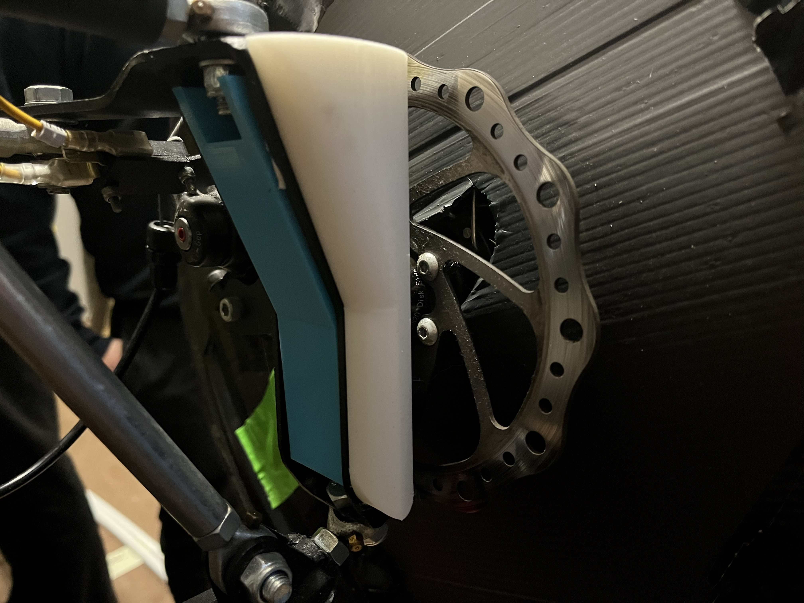
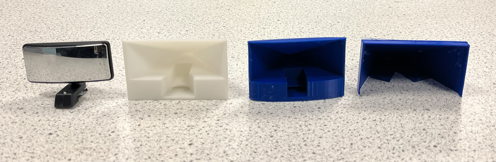
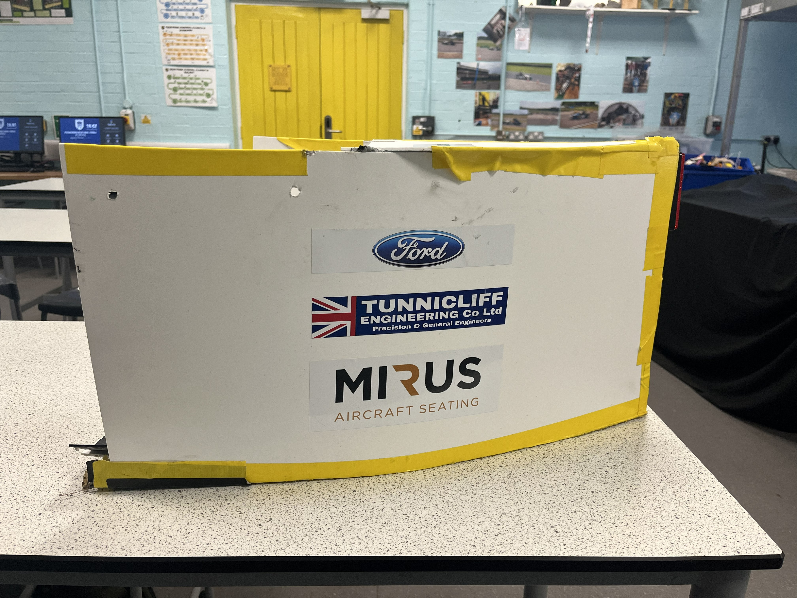
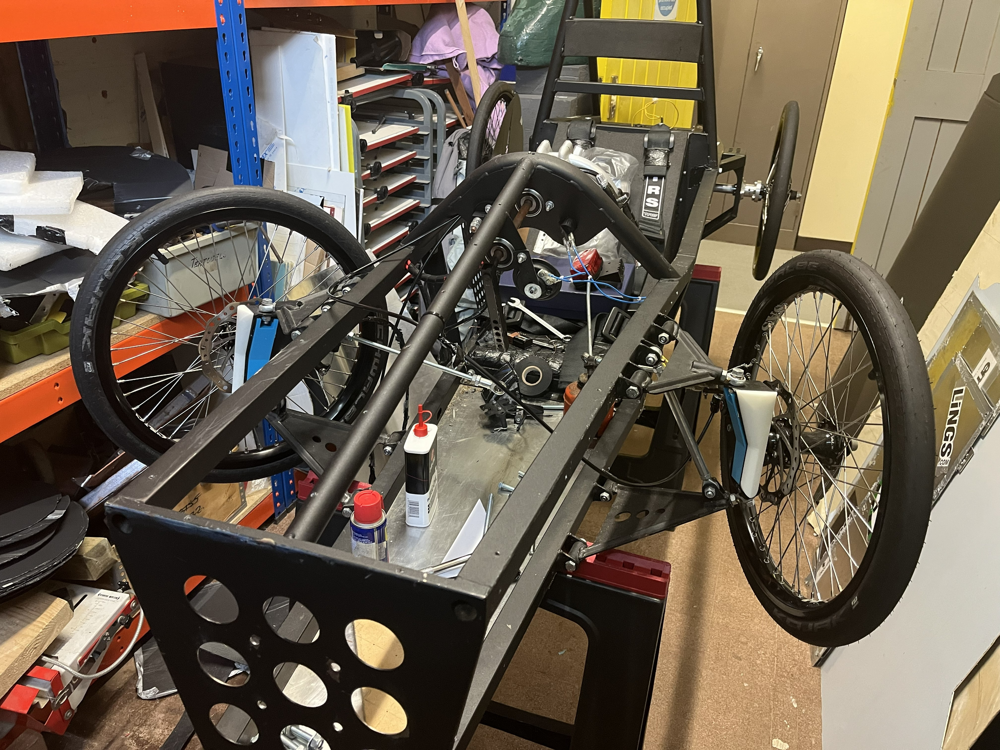
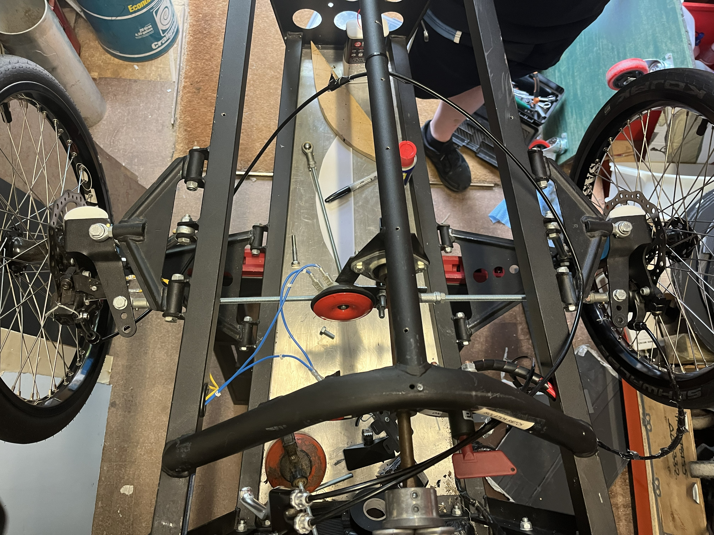
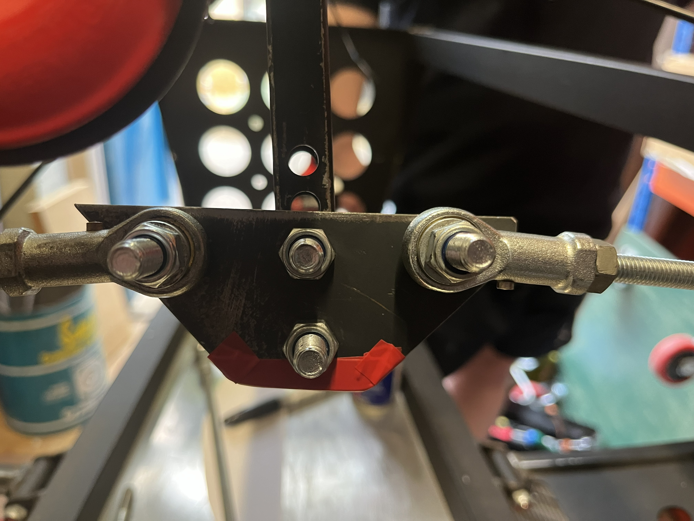
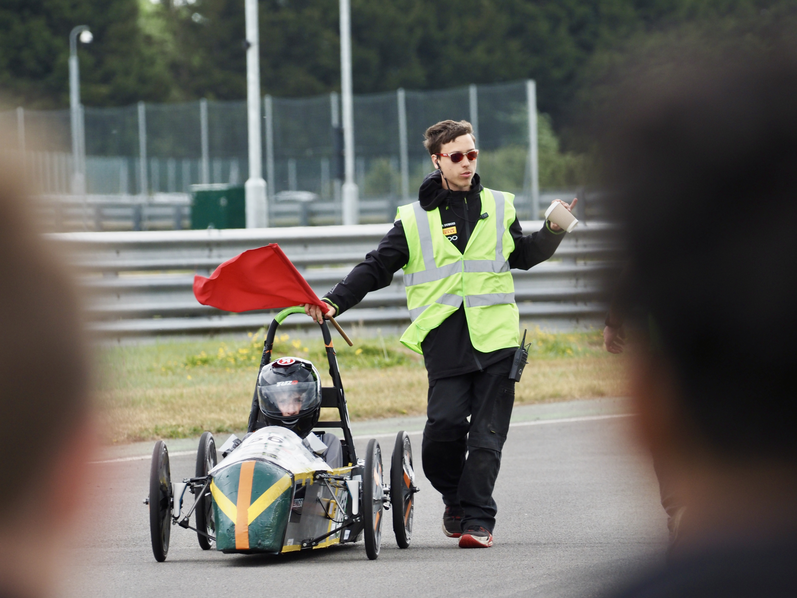
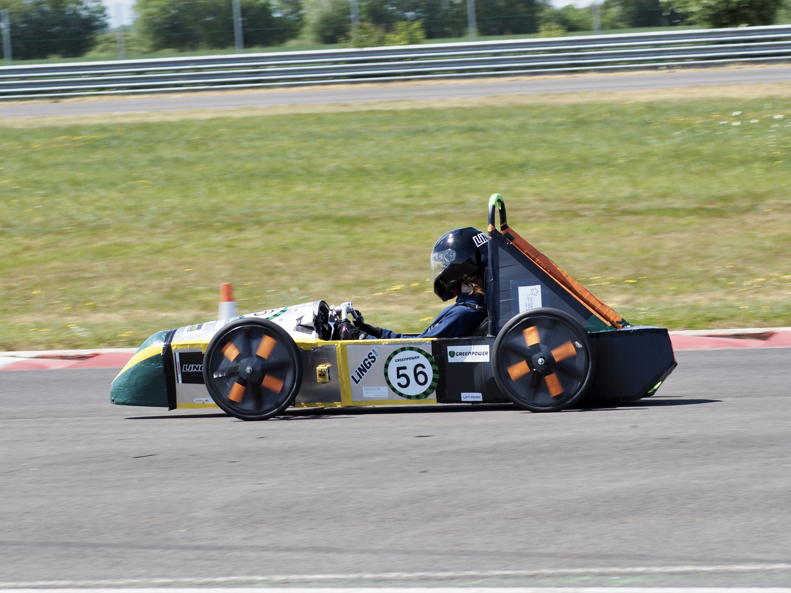
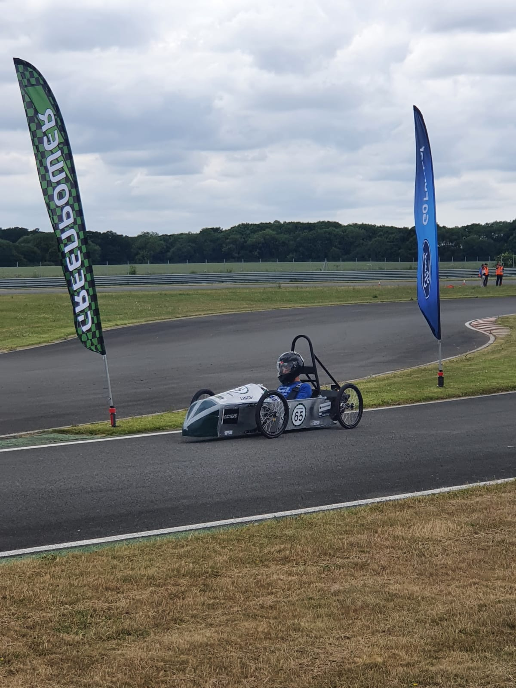
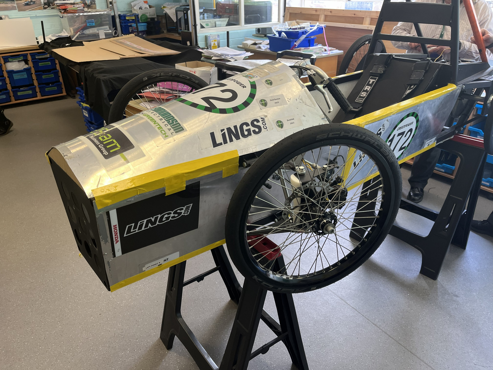

F24 (Highschool)
.JPG)
From year 7 to year 11, i spent hundreds of hours working on this car, slowly learning more about different aspects of automotive engineering and maintenance.
Over the years, i developed many different parts of the car, including the steering system, aerodynamics and electrical systems.
Aerodynamics
I focused on improving the car's aerodynamic properties to reduce drag and increase speed.
Through testing and iteration, I was able to design and implement aerodynamic improvements that significantly enhanced the car's performance on the track.
I spent a few years developing and improving parts of the aerodynamics and went on to use the different parts to gain me an Arkwright scholarship.
Here are a few photos of the parts I created:



Steering
The standard steering on the F24 cars is very innefficient and heavy due to it having two very long bars, so i decided to redesign it for better performance and weight reduction.
I made a new plate for the center of the car, where both bars would now come from.
This new design significantly improved the weight of the steering, removing unnecessary components.
Here are a few photos of the steering parts I created:



Electrical
Over the 5 years working on this car, I replaced and worked on many parts of the electrical system, reparing parts that needed attention.
For example, i replaced the motor controller. This involved quite a bit of work and required careful planning and execution.
I also attempted to work on the telemetry system, which involved working with sensors and data collection to monitor the car's performance. Although I spent a significant amount of time on this project, it was unfortunately unable to be completed due to limited time (GCSEs) and I couldn't get the microcontroller to function as wished.
Heat Sink
One of the last parts I worked on was the heat sink, which helped dissipate heat from the motor.
Along with help from other schools, we created 4 heat sinks so that each team could have their own.
This heat sink meant a lot for our car as it greatly improved the car's performance, helping us get to the international final at Goodwood, where we competed against teams from around the world.
Here is a photo of the heat sink:

What I gained
Through this experience, I gained valuable skills in engineering design, problem-solving, and teamwork. I also developed a deeper understanding of the importance of attention to detail in achieving success.
I learnt so much about engineering and loved every moment of working as part of the team.
Overall, this project was a tremendous learning experience that has prepared me well for future challenges in the field of engineering.
Gallery
Here are some more photos of the car and the different parts I worked on:





